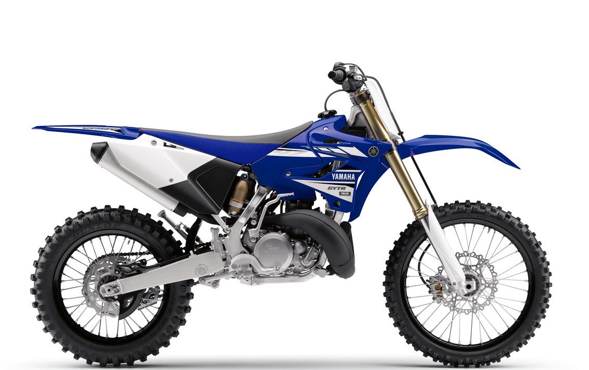
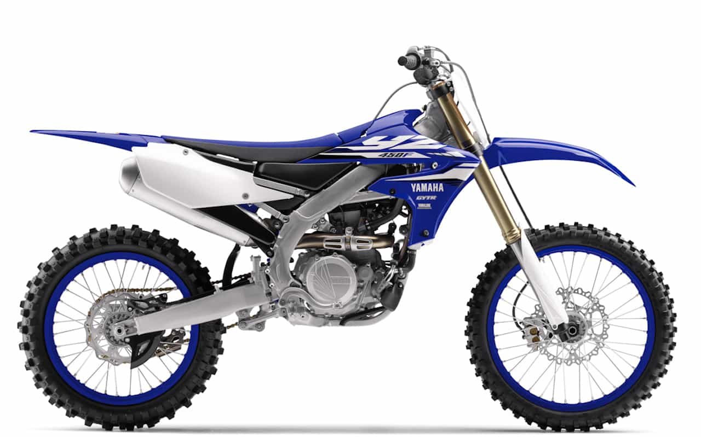

Motocross
Motocross on alkujaan kehittynyt Isossa-Britanniassa ja on nykyään moottoripyöräilyn kilpailumuoto. Perinteisestä motocrossista on muodostunut monia alalajeja, kuten enduro, supercross ja freestyle motocross. Enduroa ajetaan aikaa vastaan metsäpoluilla tai oikeastaan sitä harjoitetaan missä tahansa, erittäin raskas laji. Supercrossia ja freestyle motocrossia puolestaan ajetaan suuren yleisön edessä stadionilla tai hallissa.Lajin aloitus

Yamaha yz 250
Kyseinen moottoripyörä on 2t eli 2-tahtinen. Vähämmän vääntöä,kuin 4t versiossa. Tehoalue korkealla.

Yamaha 450 yzf
Tämä moottoripyörä on 4t ja sen tehoalue jakautuu tsaisesti. Korkeimmassa luokassa käytetään tälläistä moottoripyörää.